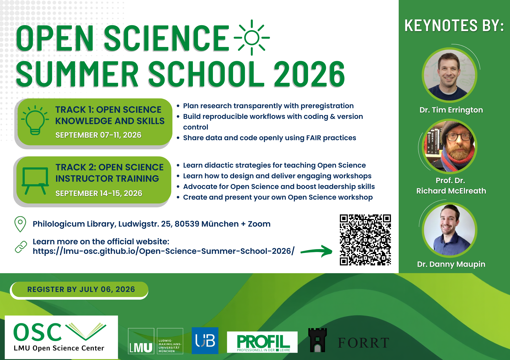
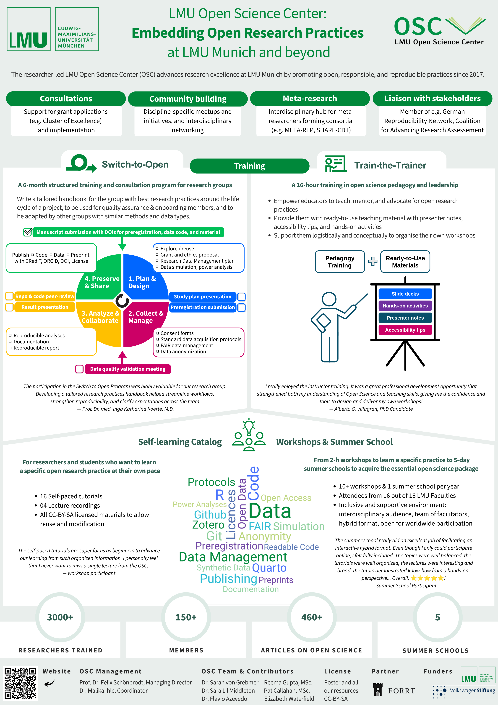
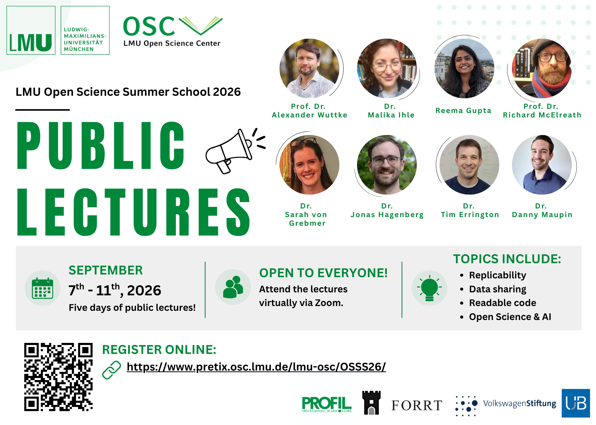

Flyer Design and Images
This page provides resources and recommendations for creating promotional materials for the OSC, including flyers, posters, social media graphics, and other visual content.
Flyer Templates
The OSC maintains a PowerPoint template that can be used as a starting point for designing flyers and promotional materials.
Printing Services
LMU In-House Printing Service
The official printing service for LMU is the Hausdruckerei (Ricoh Deutschland GmbH Printcenter LMU).
You can find additional information, including price lists and forms, on the LMU Service Portal:
| Information | Details |
|---|---|
| Responsible person | Thomas |
| Address | Ricoh Deutschland GmbH, Hausdruckerei der LMU, Ludwig-Maximilians-Universität München, Leopoldstr. 3, 80802 München |
| Phone | 089/2180-3669 |
Opening Hours
| Day | Opening Hours |
|---|---|
| Monday–Thursday | 9:00 AM – 3:00 PM |
| Friday | Closed |
To print materials (e.g., flyers or posters), contact the print shop by email or phone to discuss your requirements.
- Email:
hausdruckerei@lmu.de
External Printing Option: Printy
An affordable external option for printing, particularly for large posters, is Printy.
- Website: Printy
| Information | Details |
|---|---|
| Location | Luisenstraße 49, 80333 Munich |
| Nearby landmark | Near the TUM Main Campus |
| Opening hours | Monday–Friday, 9:30 AM – 5:00 PM |
Typical Printing Workflow with Printy
- Visit the Printy website.
- Go to Price Calculators → Large Poster Calculator.
- Keep the default settings:
- A0 format
- 145 g silk matt paper
- Indoor/outdoor presentation
- Pickup at Luisenstraße 49
- Receipt
- Click Request Order.
- An email window containing the order details will open automatically.
- Attach a PDF version of your poster.
- Edit the email if necessary and send it.
- Wait for confirmation (usually within the same day) and collect the poster.
For reference, printing an A0 poster at Printy typically costs around €15.00.
Canva
Canva is a free-to-use online graphic design platform that can be used to create social media posts, presentations, posters, logos, videos, and other visual content.
When creating on Canva, either get access to OSC’s Canva account or use your own personal account and invite the OSC as a collaborator. The design created on Canva should remain accessible to the OSC.
Here are some examples of flyers made on Canva:
Examples of Flyers Created in Canva



Microsoft PowerPoint
Using PowerPoint for Image Creation
PowerPoint is frequently used within the OSC to create flyers, social media graphics, logos, and other visual materials.
Helpful Tips
Adjusting Slide Dimensions
To change the dimensions of a slide:
- Go to the Design tab.
- Click Slide Size.
- Select Custom Slide Size.
- Enter the desired dimensions.
Working with Images
When importing images into PowerPoint, color changes may not always appear exactly as expected. For the most accurate color reproduction, use images in SVG format.
Many websites provide free SVG icons, for example:
Recommended workflow:
- Download the icon as an SVG file.
- Save it locally.
- Insert the SVG into PowerPoint.
Why Use SVG?
SVG images are recommended because they:
- preserve image quality at all sizes;
- can be recolored more accurately in PowerPoint;
- are ideal for use on websites and in digital materials.
- Navigate to the slide you want to export.
- Click File → Save As.
- Change the file format from
.pptxto Scalable Vector Graphics Format (.svg). - Click Save.
- When prompted, select Just This One.
This will export only the current slide as an SVG image.